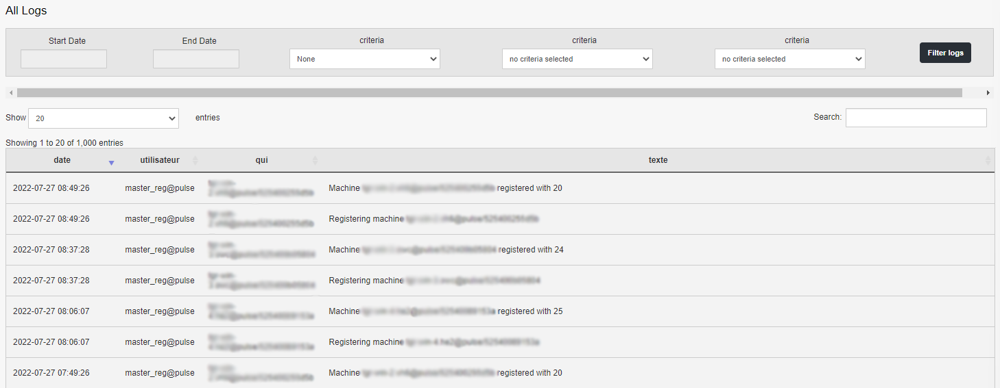

Historique des actions effectuées¶
Cette section concerne la partie Historique de l’outil Pulse.
Dans le menu historique, nous pouvons retrouver l’ensemble des actions effectuées dans l’interface de Pulse pour chaque fonction.

Dans le menu de gauche, on retrouvera les différents logs de chaque fonction :